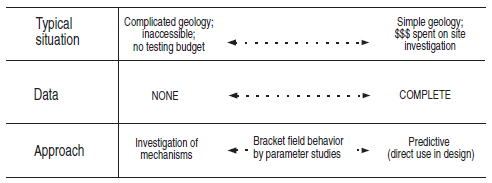

分析方法与项目设置
岩土工程过程的建模需要特别考虑一些因素，其设计思路也与采用人工制造材料的设计不同。对于岩土体内部或表面的结构和开挖，分析与设计必须在场地专属数据相对较少的条件下完成，同时要认识到变形性和强度属性可能变化很大。对于岩石或土体场地，不可能获得完整的现场数据。例如，即使在最佳情况下，也只能部分了解应力、属性和不连续面的信息。
由于设计预测所需的输入数据有限，岩土力学数值模型应主要用于理解影响系统行为的主导机制。理解系统行为之后，才适合为设计过程建立简单计算。
这种方法面向岩土工程，在该领域通常缺乏充分可靠的数据。但在其他应用中，如果有充足数据并充分理解材料行为，就可以将 3DEC 直接用于设计。当向程序提供合适数据时，3DEC 分析能够产生准确结果。
不同条件下的建模用途
建模人员应认识到，实际情况可以构成下图所示的连续谱。

图 1：建模情形的谱系。
3DEC 既可用于完全预测模式（上图右侧），也可作为检验思路的“数值实验室”（左侧）。决定使用方式的是现场情况（以及预算），而不是程序本身。如果有足够的高质量数据，3DEC 就能给出良好预测。
由于大多数 3DEC 应用面对的情况都是可用数据较少，下一主题给出一种推荐方法，将数值模型视为室内试验。绝不能将模型看成一端接收输入数据、另一端给出行为预测的“黑箱”。必须仔细制备数值“试样”，并试验多个试样，才能理解问题。
推荐步骤
下表列出了成功开展数值试验的推荐步骤；下文分别讨论各步骤。
| 步骤 1 | 确定模型分析的目标。 |
| 步骤 2 | 建立物理系统的概念图景。 |
| 步骤 3 | 构建并运行简单的理想化模型。 |
| 步骤 4 | 汇集问题专用数据。 |
| 步骤 5 | 准备一系列详细模型计算。 |
| 步骤 6 | 执行模型计算。 |
| 步骤 7 | 呈现结果以供解释。 |
步骤 1：确定模型分析的目标
模型需要包含的细节程度，通常取决于分析目的。例如，如果目的是在两种用于解释系统行为、彼此冲突的机制之间作出判断，那么只要模型允许这两种机制发生，就可以建立较粗略的模型。人们往往会因为现实中存在某种复杂特征，就希望将其纳入模型。然而，如果这些复杂特征可能对模型响应影响很小，或与模型目的无关，就应将其省略。应从整体认识入手，在必要时逐步细化。
步骤 2：建立物理系统的概念图景
建立问题的概念图景十分重要，可据此初步估计系统在给定条件下的预期行为。构建这一图景时，应提出若干问题。例如：预计系统是否可能失稳？主要力学响应是线性还是非线性？相对于问题区域内物体的尺寸，预计运动幅度是大还是小？是否存在可能影响行为的明确不连续面，还是材料基本表现为连续介质？是否受到地下水相互作用的影响？系统边界是否由实际结构界定，还是延伸至无穷远？系统的实际结构在几何上是否具有对称性？
这些考虑将决定数值模型的总体特征，例如模型几何设计、材料模型类型、边界条件以及分析所用初始平衡状态。它们还将决定是必须采用三维模型，还是可以利用实际系统的几何条件采用二维模型。
步骤 3：构建并运行简单的理想化模型
将实际系统理想化以进行数值分析时，在建立详细模型之前，先构建并运行简单试验模型会更有效率。项目开始后应尽早创建简单模型，以同时获得数据和理解。所得结果可加深对系统概念图景的认识；运行简单模型后，可能需要重复步骤 2。
简单模型可以在分析投入大量精力之前，暴露并纠正不足。例如，所选材料模型能否充分表示预期行为？边界条件是否影响模型响应？简单模型的结果还可以识别对分析影响最大的参数，从而帮助指导数据采集计划。
步骤 4：汇集问题专用数据
模型分析所需的数据类型包括以下几类：
- 几何细节（例如地下洞室剖面、地表地形、坝体剖面、岩/土结构）；
- 地质构造的位置（例如断层、层理面、节理组）；
- 材料行为（例如弹/塑性属性、破坏后行为）；
- 初始条件（例如地应力状态、孔隙压力、饱和度）；以及
- 外部荷载（例如爆炸荷载、加压洞室）。
由于具体条件（特别是应力状态、变形性和强度属性）通常存在较大不确定性，研究必须选取合理的参数范围。简单模型运行的结果（步骤 3）往往有助于确定这一范围，并为设计室内和现场试验、采集所需数据提供认识。
步骤 5：准备一系列详细模型计算
数值分析通常包含一系列计算机模拟，既涵盖所研究的不同机制，也覆盖由汇总数据库确定的参数范围。准备一组模型计算时，应考虑以下几个方面：
- 每次模型计算需要多少时间？如果模型运行时间过长，可能难以获得足够信息以得出有用的结论。应考虑在多台计算机上并行进行参数变化计算，以缩短总计算时间。
- 应在若干中间阶段保存模型状态，这样就不必为每个参数变化重复整个计算。例如，如果分析涉及多个加载/卸载阶段，用户应能够返回到任一阶段，修改参数，并从该阶段继续分析。还应考虑保存文件所需的磁盘空间。
- 模型中是否有足够数量的监测位置，以便清楚解释模型结果并与实测数据比较？在模型中设置若干监测点，记录计算期间某一参数（例如位移、速度或应力）的变化，会很有帮助。此外，始终应监测模型中的最大不平衡力，以检查分析各阶段的平衡或破坏状态。
步骤 6：执行模型计算
在启动一系列完整计算之前，最好先进行一至两次分段模型计算。每个阶段都应检查计算，确保响应符合预期。确认模型运行正确后，可将多个数据文件链接起来，执行完整计算序列。在一系列计算过程中，应能随时中断计算、查看结果，然后根据需要继续计算或修改模型。
步骤 7：呈现结果以供解释
问题求解的最后阶段是呈现结果，以便清楚地解释分析。最好通过图形显示结果，可以直接显示在计算机屏幕上，也可以输出到纸面绘图设备。图形输出应采用可直接与现场测量和观察比较的格式。图中应清楚标出分析所关注的区域，例如计算所得应力集中位置，或模型中稳定运动与不稳定运动的区域。模型中任意变量的数值也应便于获取，以供建模人员作更详细的解释。
建议遵循这七个步骤，高效求解岩土工程问题。后续各节介绍如何应用 3DEC，满足这一建模方法中各步骤的具体要求。
开始一个项目
初步准备完成后，3DEC 建模过程从创建项目开始。这一步简单但很重要。项目用于“容纳”模型、创建模型所需的资源，以及模型生成的输出。
创建项目文件
要创建新的项目文件，请从主菜单（main menu）选择。这将打开标准对话框，用户可指定项目文件的名称和所在文件夹。
创建文件后，包含项目文件的文件夹将作为项目的工作目录。除非通过命令明确指定其他保存位置，否则所有模型状态（SAV）文件都保存在该目录。无论保存在哪里，项目均将这些文件作为项目的一部分进行跟踪。这提供了多种功能，包括在界面中快速切换保存状态，以及在状态记录（State Record）窗格中收集和保存构成各保存状态的命令；后者又使程序能够撤销操作并创建打包文件（bundle file）。
项目还保存用户界面设置（布局）、为本项目指定的模型选项、项目中生效的全部程序选项状态、项目采用的计算模式，以及创建的全部模型图形。
项目本身不包含保存状态、导入文件或数据文件。这些文件独立存在于项目之外。但项目会跟踪这些文件的使用情况及其来源位置。
项目工具
3DEC 提供项目（Project）窗格进行项目管理。此外，工具栏中的打包（Pack）功能（）可将项目文件、项目源文件和保存状态记录归集为一个便于传输和存储的文件（类似压缩归档文件）。通过技术支持（Technical Support）对话框（）发送技术支持请求时，也最好附上项目文件（作为打包文件的一部分）。
| 这些内容对您有帮助吗？… 版权与免责声明 |
FLAC3D © 2019, Itasca | 原文更新于 2020 年 10 月 8 日 |